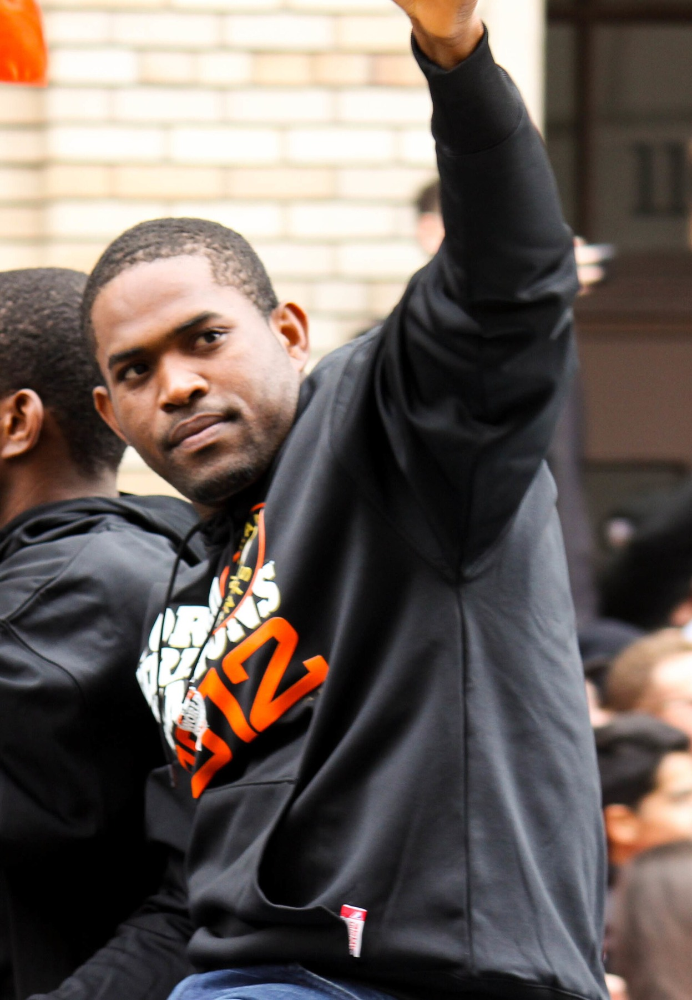

The Bay Area Sports Timeline
Four decades of the loudest sports region in America, laid out era by era. Dynasties, ballparks, arenas, villains, and the moments Bay Area fans will argue about forever. Scroll it, or jump to an era.
The 49ers Dynasty
Bill Walsh's West Coast offense turns San Francisco into the team of the decade. Five Super Bowls, Montana to Rice, and the play that started it all. 1982
1982The Catch, and the Dynasty It Started
Montana to Dwight Clark in the back of the end zone at Candlestick. The moment the dynasty was born.
 1980s
1980sTeam of the Decade: When the 49ers Ran the NFL
Five Super Bowls with Montana, Rice, and Young. The gold standard of a generation.
 1994
1994Steve Young Steps Out of the Shadow
Six touchdowns in Super Bowl XXIX, finally out from behind Montana. The dynasty's last great chapter.
The Bonds-Era Giants
Barry Bonds turns every at-bat into event television, drags the Giants to the 2002 World Series, and rewrites the record books at Pac Bell Park. 2001
2001Barry Bonds: The Loudest Bat SF Ever Saw
73 home runs, four straight MVPs, and a splash-hit chase that stopped the city cold.
 2000
2000Jeff Kent: The MVP Nobody Had to Like
The best offensive second baseman of his time, hitting behind Bonds and winning the 2000 NL MVP.
 2000
2000A Ballpark on the Bay Opens
China Basin gives the Giants a waterfront home, McCovey Cove, and the splash-hit era.
A's Moneyball
Billy Beane and a bottom-tier budget build a machine in Oakland, win 20 straight in 2002, and change how the entire sport values a player. 2002
2002The Streak: 20 Wins in a Row
The 2002 A's ran off the longest winning streak in American League history on one of the smallest payrolls in baseball.
 2000s
2000sThe Big Three and the Coliseum Roar
Hudson, Mulder, and Zito anchored a rotation that made the Oakland Coliseum feel dangerous every October.
 2024
2024From Moneyball to Sacramento
How a century of Oakland baseball ended up boxed into a Triple-A park while the franchise waits on Las Vegas.
The Even-Year Giants
Three World Series titles in five years. Bochy's bullpen wizardry, Posey behind the plate, and Bumgarner authoring the greatest October pitching run of the era. 2014
2014Bumgarner Owned the 2014 World Series
Five scoreless innings on two days' rest to close out Game 7. The best World Series pitching performance in a generation.
 2010–14
2010–14Even-Year Magic: The Giants Dynasty
2010, 2012, 2014. A dynasty built on pitching, timing, and a city that finally got its parade.
 2010s
2010sBochy's Wizardry and the Core Four Bullpen
How a Hall of Fame manager and a lockdown bullpen turned close games into titles.
The Warriors Dynasty
Curry and the Splash Brothers turn Golden State into the NBA's defining team: four titles, a 73-win season, and a style that reshaped basketball. 2016
201673-9: Best Record Ever, Then They Added Durant
The greatest regular season in NBA history, followed by the most controversial free-agent signing of the decade.
 2015
2015The Night Klay Scored 37 in a Quarter
Thirteen shots, thirteen makes, one quarter. The most absurd shooting display the league has ever seen.
 2017–18
2017–18From Rick Barry to the Splash Brothers
The full arc of Warriors greatness, from the 1975 title to back-to-back rings with Durant.
Candlestick, Roaracle & Oakland
The buildings that made the noise. Fog and football at Candlestick, the loudest arena in the league at Oracle, and the Raiders and A's history the East Bay refuses to forget. 1960–2013
1960–2013Candlestick Park Memories
Wind, fog, The Catch, and half a century of Giants and 49ers football on the edge of the bay.
 1966–2019
1966–2019The Roaracle Era
Before Chase Center, Oakland's arena was the loudest building in the NBA and the beating heart of the dynasty.

1960–2019Raiders & Oakland History
The Black Hole, the Silver and Black, and a city that lost the Raiders twice and never stopped being loud.
Recent Bay Area Sports Drama
Super Bowl heartbreak, front-office fights, a franchise relocation, and a Sharks rebuild finally showing a pulse. The stories playing out right now. 2024
2024The 49ers Are Still Paying For Vegas
They had the Chiefs on the ropes in Allegiant Stadium and let it go. That overtime still shapes everything.
 2025
2025The Tony Vitello Hire
The Giants had a chance to make a grown-up baseball decision. Instead they made a headline.
 2025
2025The Sharks Rebuild Has a Pulse
Seven springs without playoff hockey, and suddenly the Tank is worth watching again. His name is Macklin Celebrini.